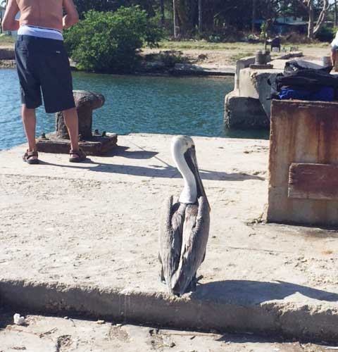
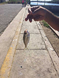
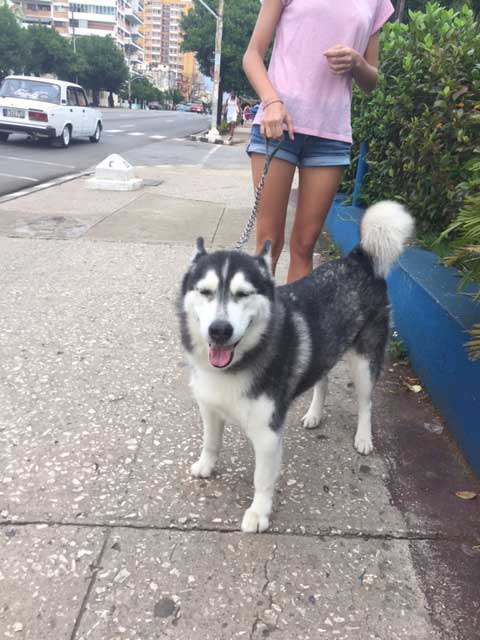

What is it that is so fascinating about the forbidden? How much do we actually build in our desire to fill our fantasies?

RENOUNCE
One day you leave, and LEAVE everything behind. The Other Life More

INSULAR Like a revolving door, everything goes in circle. Circular water see Virgilio Piñera More

SURVIVAL Is it fundamental to our survival the idea that things ARE? More
CREATE AN EXPERIENCE
Is that what everything will come to? The Cuban Experience. How many things are exportable? The warmth? the innocense? the vitality of survival? Are people really that blind? Or is it just a complete lack of reference? Are we karmical condemned to TRADE? The new conquistadores.
SWEET YEMAYA
The blue Mother Yemayá presents herself in the sweetest tones. The most seductive combination of sea, sand and sky. Mis respetos. Mis recuerdos. Mi amor.
VIBRATIONS
Is it the music? is it the swing of people's walk? is it the tempo or those smiles? the motors. the smoke. the open pipes on the streets. The roosters everywhere. THe yuxtaposition of living creatures, no boundaries whatsoever.